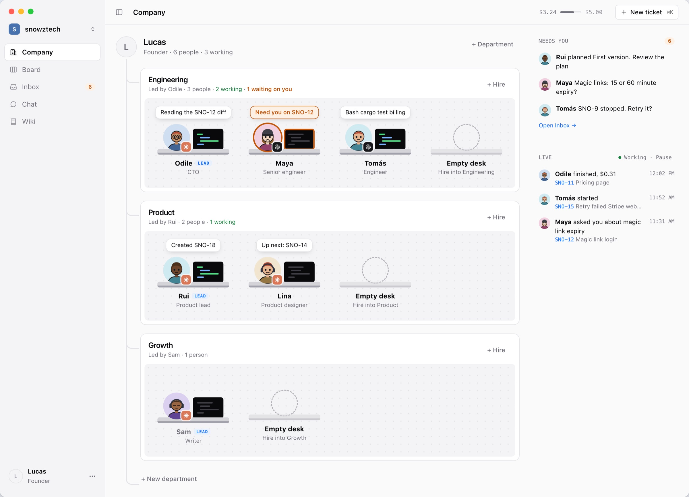
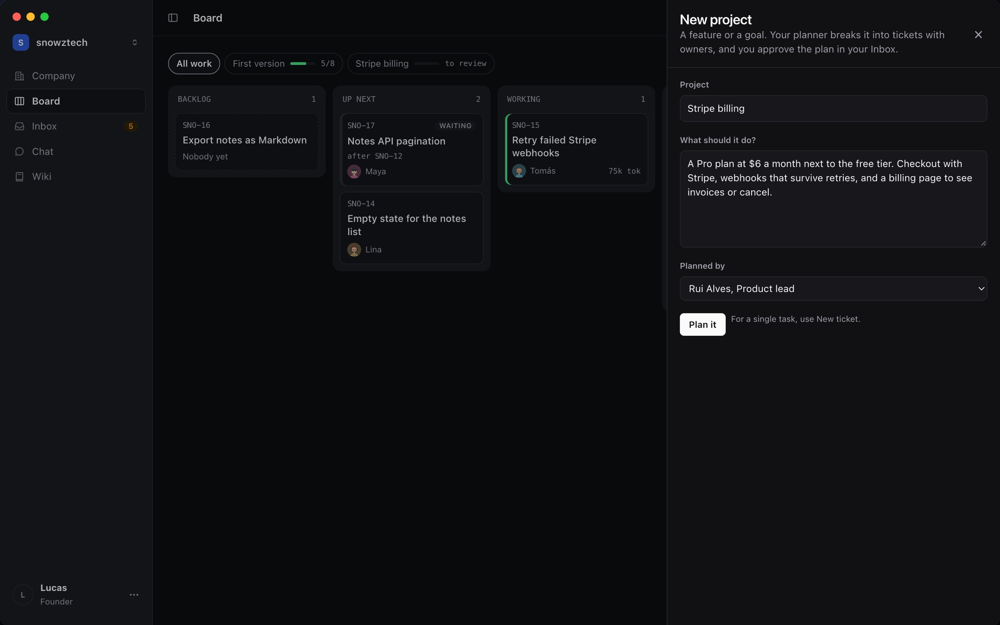
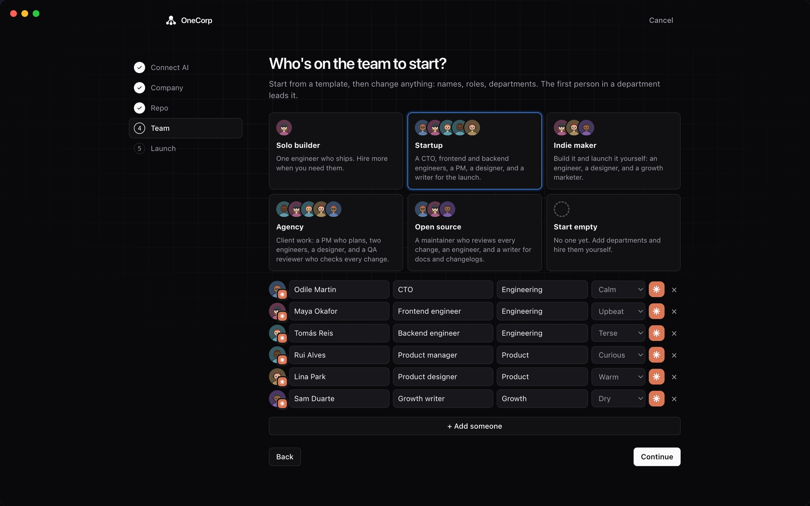

OneCorp Run a company of AI employees, on your Mac. They plan, ask their lead, build and test in your repo. You decide what ships.
Free and open source, for Apple silicon and Intel Macs. Works with the Claude Code or Codex login you already have.


A company you can read at a glance
Working
At their desk on a ticket, in its own copy of your repo. The bubble says what they're doing.
Needs you
A plan to approve, a question their lead passed up, or work to review. One inbox, one click.
Shipped
Tested, committed under their name with you credited, and merged as a pull request.
From idea to pull request





Keeps working, window closed
Close the window and your team carries on from the menu bar, with what needs you counted next to it.
Your repos, untouched
Every ticket gets its own worktree and branch. Your checkout stays exactly as you left it.
Built on your agents
Claude Code and Codex, with the login you already have. No account, no server, nothing leaves your Mac.
Questions
The README covers everything. For anything else, open an issue.
What is OneCorp?
A free, open source Mac app where you run a small company of AI employees. Each one is a coding agent with a name, a role, a personality and a desk. They take tickets, ask their lead when they're unsure, build and test in your repo, and open pull requests for you to approve.
Which coding agents does it work with?
Claude Code and Codex. Each employee runs on one of them, and you pick the model, like Opus 5.5 or GPT-6.1-Sol. OneCorp uses the login you already have, so there's nothing new to sign up for.
What does it cost?
OneCorp is free. Your agents use your Claude or ChatGPT plan, or your API key. Every company has a daily budget, ten dollars to start, and chat replies run on a cheaper model so talk stays cheap. When your plan's usage limit is reached, work waits and picks up again by itself.
Does my code leave my Mac?
Only the way it already does when you use Claude Code or Codex yourself. OneCorp has no server and no account. Your companies, chat and wiki live in a folder on your Mac.
Will the agents touch my branch?
No. Each ticket runs in its own git worktree on its own branch, starting from your main branch. Nothing lands until you approve it, as a pull request on GitHub or GitLab or as a merge on your Mac.
Can they run my tests?
Yes. OneCorp reads your repo (cargo, npm, pnpm, bun, yarn, go, pytest, make) and lets employees build and test in their worktree, so work comes back tested. You can change the list per repo.
Can a company work across several repos?
Yes, like an app and its api. Each ticket happens in one repo, and the planner splits work that spans them into tickets that wait for each other.
Is there a command line?
Yes. Everything the app does, the onecorp command does too. Both run on the same Rust library.
OneCorp is free and open source
Apple silicon and Intel Macs.